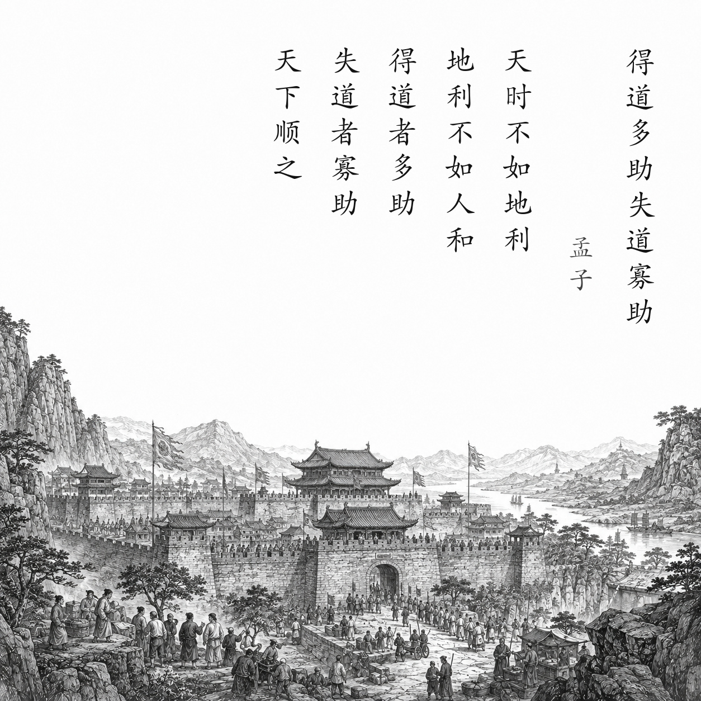

战国 · 孟子及其弟子
得道多助，失道寡助
天时不如地利，地利不如人和。
三里之城，七里之郭，环而攻之而不胜。夫环而攻之，必有得天时者矣，然而不胜者，是天时不如地利也。
城非不高也，池非不深也，兵革非不坚利也，米粟非不多也，委而去之，是地利不如人和也。
故曰：域民不以封疆之界，固国不以山溪之险，威天下不以兵革之利。
得道者多助，失道者寡助。寡助之至，亲戚畔之；多助之至，天下顺之。
以天下之所顺，攻亲戚之所畔，故君子有不战，战必胜矣。
白话翻译
有利的时机比不上有利的地形，有利的地形又比不上人心团结。
一座小城被四面围攻却攻不下来，围攻者总会遇到有利时机；仍不能取胜，说明时机不如地形重要。
守城一方城墙不低、护城河不浅、武器不差、粮食不少，却弃城逃走，说明有利地形又比不上人心齐。
所以，不能只靠边界限制百姓、只靠山河巩固国家、只靠武器威慑天下。
施行仁政的人得到很多帮助，背离仁政的人得到很少帮助。少到极点，连亲属也会背叛；多到极点，天下人都会归顺。
凭借天下人的支持去攻打连亲属都背叛的人，所以仁德之君要么不战，一战就必然取胜。
为什么写这篇古诗文
本文出自《孟子·公孙丑下》。它先用攻城和守城两个例子比较“天时、地利、人和”，再由战争推到治国，说明真正稳固的力量来自仁政和民心。这里的城池是论证用例，不能当作孟子路过某地后写下的纪行。
关于作者
孟子（约前372—前289），名轲，邹人，战国时期儒家思想家，后世尊为“亚圣”。他曾游说齐、梁等国，主张仁政、民贵君轻；《孟子》由其言论和论辩材料编定而成，传统上认为有弟子参与。